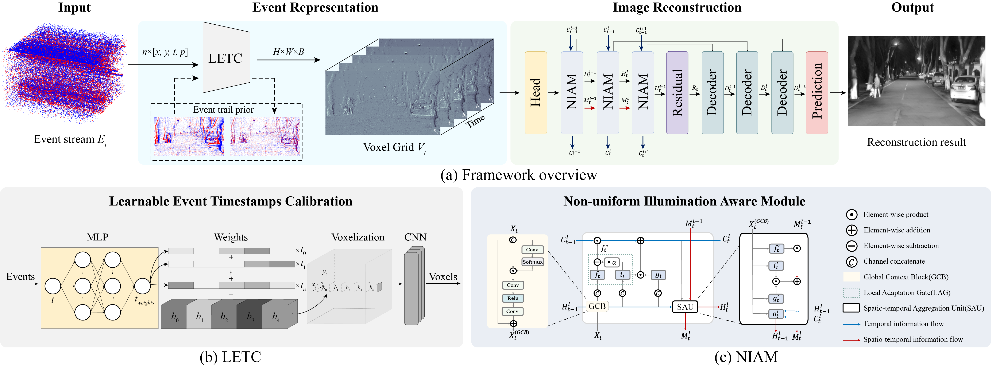
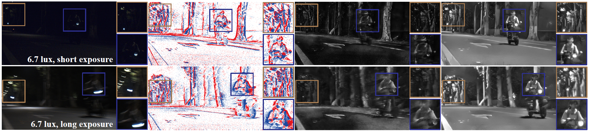

Haoyue Liu 刘昊岳
Ph.D. Student
1037 Luoyu Road,
Huazhong University of Science and Technology (HUST),
Wuhan, China, 430074
Email: liuhy@hust.edu.cn
Haoyue Liu 刘昊岳Ph.D. Student
1037 Luoyu Road, |
|


|  | Seeing Motion at Nighttime with an Event Camera.
Haoyue Liu, Shihan Peng, Lin Zhu, Yi Chang, Hanyu, Luxin Yan. IEEE Conference on Computer Vision and Pattern Recognition ( CVPR ), 2024. |

|
Exploring the Common Appearance-Boundary Adaptation for Nighttime Optical Flow.
Hanyu Zhou, Yi Chang, Haoyue Liu, Wending Yan, Yuxing Duan, Zhiwei Shi, Luxin Yan. International Conference on Learning Representations ( ICLR ), Spotlight, 2024. |
|  | Seeing Motion at Nighttime under Extreme lighting with an Event Camera.
Haoyue Liu, Jinghan Xu, Yuxing Duan, Hanyu Zhou, Yi Chang, Luxin Yan, Yonghong Tian. IEEE Transactions on Pattern Analysis and Machine Intelligence ( TPAMI ), Under review, 2024. |